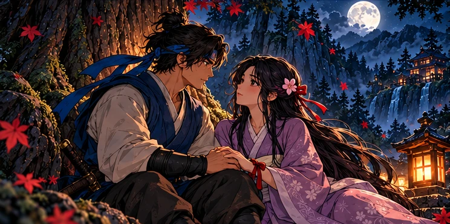

In TestingOUR FIRST WORLD / 01CEDAR SHADOWS
HANA
ANDROID · ACTION-ADVENTURE
A promise worth fighting for.
A ninja’s journey. A love threatened.
A world beneath the cedar shadows.
 RETROSOULG A M E S
RETROSOULG A M E SOUR WORLDS
Every game opens a different door. Explore the first world from RetroSoul Games — with more room for imagination ahead.
ANDROID · ACTION-ADVENTURE · IN TESTING

In TestingOUR FIRST WORLD / 01CEDAR SHADOWS
ANDROID · ACTION-ADVENTURE
A ninja’s journey. A love threatened.
A world beneath the cedar shadows.
A dusty frontier. An impossible city. A mystery just out of sight. We’re open to wherever a good story takes us.
Creative possibilities, not announced games. Cedar Shadows: Hana is our only current title.